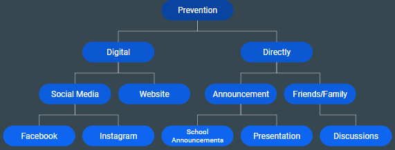

What To Do
- If you’re a foreign person coming in to another country, please make sure to diagnose any diseases or viruses inside of you and take the vaccines for them.
- If you have or feel like you have Rubella/German measles, come to the nearest pediatrician to check. Note: Stay away from people as you have the virus.
- f you can’t go to the nearest pediatrician, try to stay home.
- When going outside, try not to cough or sneeze at others because the virus can be spread through the air and others can contract the virus.
- Try not to touch areas of your body that can emit the disease such as the nose. If you do, wash your hands often.
- Try not to irritate the virus once exposed. It may cause faster spread.
- Reminder: Do not wait until the virus will come out, the virus will not get ridden of until you take a specific RV vaccine.
How I Can Spread The Word

Prevention chart made by Allen Tran at this page. CC-0(Free use).